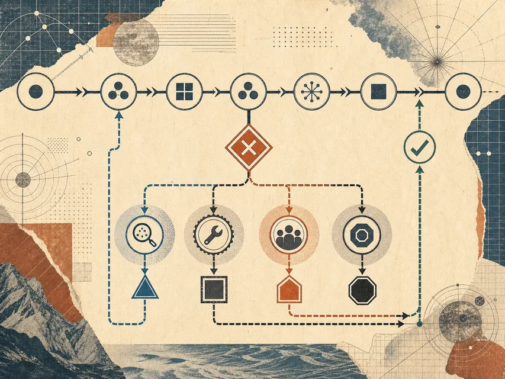

文字完整
结论有产品、能力和明确状态
在 Nova 核查画布上阻止来源错配
 VER. 2608.1
Built with impress.js
VER. 2608.1
Built with impress.js
完成本讲后，你应该能够
候选结论：“Nova 已支持部署在客户自有环境中”
官方模拟来源：“服务运行在供应商云，客户可通过私有网络端点访问”
结论有产品、能力和明确状态
“私有网络访问”没有说明服务运行在客户环境
进入周会后，负责人可能把未知能力当成已确认事实
检查点要阻止错误继续向下游传播
过程节点负责产出；检查点负责判断；最终验收负责决定是否采用
检查点要同时看错误代价、可获得证据和不确定性
格式不统一，可以由脚本自动修复
字段缺失，需要补材料或回到上游
事实、权限和对外承诺，需要人确认
检查点不是越多越好，而是要放在错误即将变贵的位置
一个可执行标准至少能让检查者回答：看什么、凭什么、何时通过
把模糊词放回一个对象和证据中，不同检查者才会得到相近的判断条件
每条关键主张都能回到支持它的原始来源
规定字段全部出现，缺失项被明确标记
冲突、日期和适用边界被记录，不能只看语气
| 检查点 | 检查对象 | 通过条件与证据 | 失败去向 |
|---|---|---|---|
| 抽取后 | 运行位置、访问方式和限制字段 | “供应商云”“私有网络端点”与原文一致 | 回到抽取；缺少客户环境信息时标记 unknown |
| 采用前 | “Nova 支持客户环境部署”的短结论 | 必须有直接说明服务运行在客户环境的来源 | 保留 unknown，不进入周会汇报 |
先检查主张与来源是否匹配，再决定结论能否进入汇报
把局部执行和最终采用分开，责任才不会被一句“人检查”掩盖
从画布选择高代价节点，把节点卡扩展成可复查的判断卡
哪一份节点产物；例如 Nova 的运行位置字段
什么可观察结果算通过；缺口或冲突标为失败或待核实
来源、摘录、日期或运行记录，能够被另一位检查者复看
谁检查、批准或退回；失败带着什么缺口回到哪一步
另写一条无法自动判断、需要人工接管的边界
标准只有面对通过和失败样例时才真正可执行
原文写“运行在供应商云”，主张卡也记录供应商云：抽取检查通过
原文只写“私有网络访问”，结论却写“客户环境部署”：采用检查失败
只看检查点卡和两个样例，不听作者额外解释
如果两个人判断不同，就补充“运行位置”定义或把状态改为 unknown
检查点后的失败不能只写成“重新处理”
来源或字段缺失 → 回到获取节点
抽取或匹配错误 → 重做出错节点
无权访问或批准 → 停下等待授权
来源冲突或高风险承诺 → 由责任人决定

下一讲继续追问：证据从哪里来，冲突怎样记录，异常怎样处理
来源、日期和原始位置能够被复看
不同来源不一致时保留差异，不强行合并
零结果、部分完成和权限不足都有明确状态
标准让人知道是否通过，证据让人知道为什么通过
检查点把工作流中的“完成”变成可重复的判断
靠近错误开始变贵的节点，而不是一律放在最后
描述对象、条件、证据和责任
工具可以检查局部，人保留关键采用判断
明确退回、补证、请求权限或人工接管
没有失败去向的验收标准，只是一个漂亮的口号